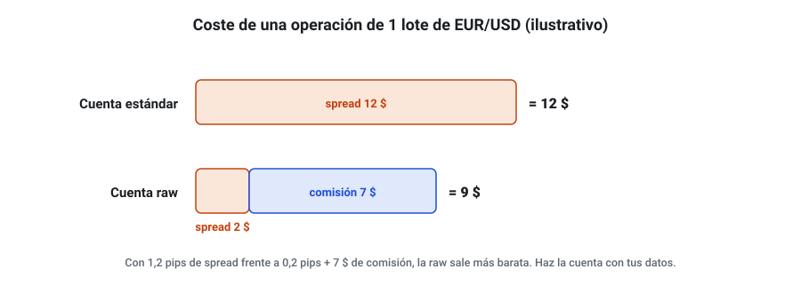
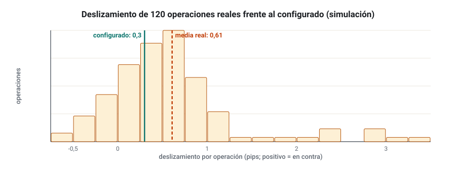
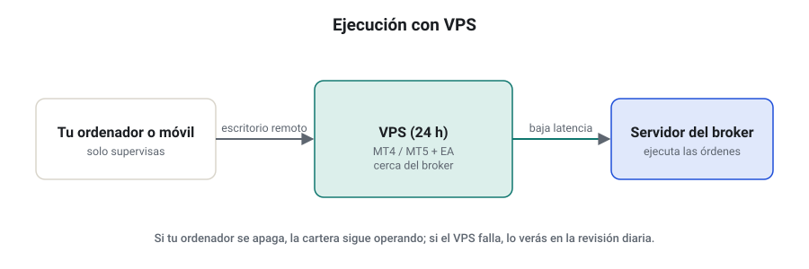
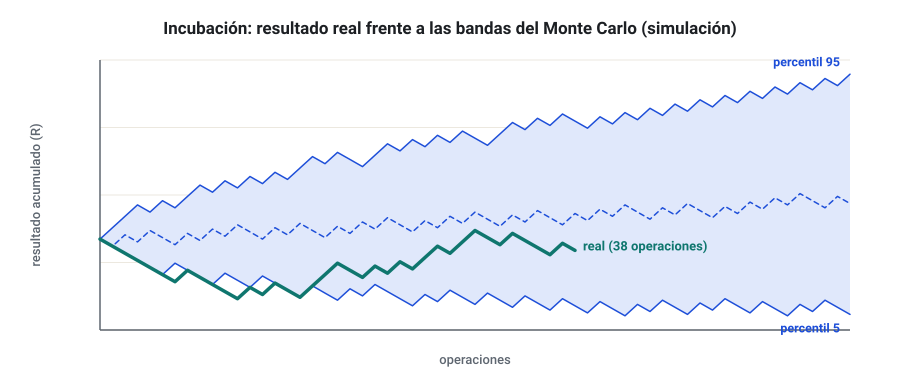
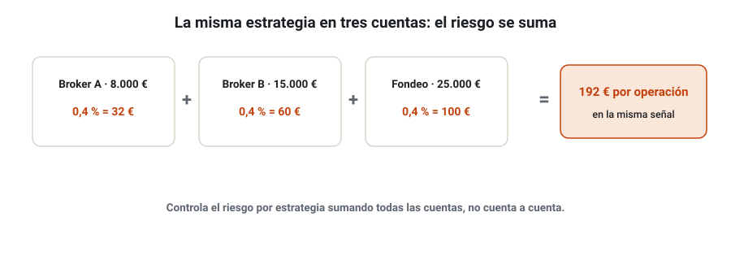

SEMANA 16 · ETAPA 4 · CARTERAS Y EJECUCIÓN
Varias cuentas y ejecución
Presentación de la semana
Última semana de la etapa 4. Tu cartera ya opera en demo. Esta semana aprenderás a llevarla a la práctica con disciplina profesional: qué tipo de cuenta elegir, cómo medir la ejecución real frente al backtest, cómo montar un entorno fiable con un VPS, cómo supervisar la cartera y cuándo desactivar una estrategia, y cómo gestionar varias cuentas sin duplicar el riesgo. Terminarás con la evaluación integradora de la etapa 4: tu cartera en incubación, con su plan de supervisión completo.
Objetivos
Al terminar la semana sabrás:
- Elegir el tipo de cuenta adecuado y entender las diferencias entre demo y real.
- Medir el deslizamiento, el spread y los fallos reales frente a lo previsto.
- Montar un entorno de ejecución fiable y seguro con un VPS.
- Supervisar una cartera con bandas de Monte Carlo y aplicar criterios de desactivación.
- Gestionar varias cuentas y controlar la exposición duplicada.
- Integrar todo lo de la etapa 4 en un plan de incubación.
Plan de la semana (22–25 horas)
| Bloque | Horas | Qué harás |
|---|---|---|
| Clases | 5 | Cinco lecciones: lectura y vídeos |
| Prácticas | 9 | VPS, registro de ejecución y plan de supervisión |
| Evaluación integradora | 8 | Plan de incubación de la cartera |
| Revisión y planificación | 2 | Glosario, cuaderno y plan de la etapa 5 |
Qué necesitas
- Tu cartera en demo (semana 15) con al menos una semana de operaciones.
- El análisis de Monte Carlo de la cartera (semanas 11 y 14).
- Opcional: un VPS de prueba. Muchos proveedores ofrecen periodos gratuitos; no contrates nada de pago sin decidirlo con calma.
Criterio para desbloquear la semana 17
Tener en estado APROBADO, con un 80 % o más cada uno:
- ☐ Examen de la semana 16
- ☐ Evaluación integradora de la etapa 4 (plan de incubación)
- ☐ Investigación I-16 documentada dentro de la evaluación integradora
Cuentas demo y reales; tipos de cuenta
Formato: clase de 30 minutos · Lectura: 25 minutos
Demo no es real
La demo usa precios reales, pero la ejecución puede ser mejor que en real: menos deslizamiento, sin recotizaciones y, en algunos brokers, sin el mismo servidor. Por eso la incubación en demo comprueba que la estrategia funciona técnicamente, pero no garantiza la misma ejecución en real.
Tipos de cuenta habituales
| Tipo | Coste | Para quién |
|---|---|---|
| Estándar | Spread más amplio, sin comisión | Estrategias con objetivos amplios |
| Raw / ECN | Spread muy bajo más comisión por lote | Estrategias con muchas operaciones u objetivos pequeños |
| Cent o micro | Cuenta en céntimos, lotes muy pequeños | Probar en real con poquísimo dinero |
| Sin swap (swap-free) | Sin swap, a veces con otras comisiones | Quien no puede o no quiere pagar o cobrar intereses |

El paso a real, más adelante
Una cuenta real pequeña o una cuenta cent es la forma de medir la ejecución real sin arriesgar mucho. Lo verás en la etapa 5, con el capital propio (semana 18). En esta semana trabajas en demo.
Comprueba que lo has entendido
- ¿Por qué la demo no garantiza la misma ejecución que la real?
- ¿Cuándo compensa una cuenta raw frente a una estándar?
- ¿Para qué sirve una cuenta cent?
Deslizamiento, spreads y fallos de conexión
Formato: clase de 35 minutos · Lectura: 30 minutos
Medir la ejecución
Para cada operación de tu demo (y después de tu real), anota en un registro de ejecución:
- Precio que la estrategia «esperaba» (el del backtest o el de la señal) y precio obtenido.
- Spread en el momento de la entrada y de la salida.
- Hora de la señal y hora de la ejecución.
- Cualquier rechazo, recotización o error.
La diferencia entre lo esperado y lo obtenido, sumada a lo largo de las operaciones, es el coste de implementación.

Cómo interpretarlo
- Si el deslizamiento medio real es mayor que el configurado, vuelve a probar la estrategia con el valor real (semana 10): ¿sigue cumpliendo tu hoja de evaluación?
- Mira las colas: unos pocos deslizamientos grandes (en noticias, aperturas) pueden pesar más que muchos pequeños.
- Compara por tipo de orden: las órdenes stop sufren más.
Los fallos técnicos
Cortes de internet, reinicios del ordenador, actualizaciones automáticas o la plataforma cerrada por error hacen que una estrategia no abra o no cierre una operación. Cada uno de estos fallos rompe la equivalencia con el backtest. La solución es un entorno dedicado (lección 3) y supervisión diaria (lección 4).
Comprueba que lo has entendido
- ¿Qué anotas en el registro de ejecución?
- ¿Qué haces si el deslizamiento real supera el del backtest?
- ¿Por qué importan las colas del deslizamiento?
VPS y seguridad operativa
Formato: taller de 35 minutos · Práctica: 2 horas
Qué es un VPS
Un VPS (Virtual Private Server) es un ordenador virtual en un centro de datos que está encendido y conectado todo el tiempo. Instalas en él MetaTrader y tus EA, y operan aunque tu ordenador esté apagado.

Cómo elegirlo
- Ubicación cercana al servidor del broker (por ejemplo, Londres o Nueva York): menos latencia.
- Recursos suficientes: 2–4 GB de RAM suelen bastar para varias plataformas con pocos EA.
- Fiabilidad y soporte: disponibilidad garantizada, copias de seguridad.
- Alternativa integrada: MetaTrader ofrece su propio servicio de alojamiento virtual de pago, que migra los EA del gráfico. Es cómodo, pero conviene entender qué se migra y qué no.
Seguridad operativa
- Contraseñas fuertes y únicas para el broker, el VPS y el correo, y verificación en dos pasos donde exista.
- Contraseña de inversor (solo lectura) para enseñar tu cuenta a otros; nunca la contraseña principal (semana 2).
- Actualizaciones del sistema del VPS en horario sin mercado y reinicio controlado de las plataformas.
- Copia de seguridad de los EA, sus parámetros y tu ficha de configuración.
- Acceso remoto solo desde tus dispositivos.
Comprueba que lo has entendido
- ¿Qué ventaja tiene un VPS cerca del servidor del broker?
- ¿Qué contraseña compartes para enseñar tu cuenta?
- ¿Cuándo actualizas el sistema del VPS?
Supervisión y criterios de desactivación
Formato: clase de 40 minutos · Lectura: 35 minutos
La incubación
La incubación es un periodo en el que la cartera opera en demo (o en real con tamaño mínimo) antes de recibir el capital previsto. Su objetivo es comprobar que se comporta dentro de lo esperado. Como orientación, dura al menos 3 meses o un número de operaciones que permita comparar (por ejemplo, 30–50 por estrategia).
Las bandas de Monte Carlo
Con el Monte Carlo de cada estrategia (semana 11), dibuja las bandas entre las que debería moverse su resultado acumulado: por ejemplo, los percentiles 5 y 95 operación a operación. En la incubación, compara la curva real con esas bandas.

Criterios de desactivación
Escríbelos antes de empezar. Ejemplos:
| Señal | Umbral orientativo | Acción |
|---|---|---|
| Curva real por debajo del percentil 5 | Durante N operaciones seguidas | Revisar |
| Drawdown | Mayor que el percentil 99 del Monte Carlo | Desactivar |
| Racha de pérdidas | Mayor que la máxima esperable (semana 3) | Revisar |
| Ejecución | Coste real mayor que el coste de equilibrio de la semana 10 | Desactivar |
| Error técnico | Diferencia con la verificación sin explicación | Desactivar hasta resolver |
La rutina de supervisión
- Diaria (5 minutos): plataformas conectadas, EA activos, errores en los registros, riesgo abierto.
- Semanal (30 minutos): registro de ejecución, curva frente a bandas, exposición por divisa.
- Mensual (2 horas): métricas de cada estrategia y de la cartera, criterios de desactivación, informe en el cuaderno.
Comprueba que lo has entendido
- ¿Qué es la incubación y cuánto dura como mínimo?
- ¿Qué indican las bandas de Monte Carlo?
- ¿Por qué no se desactiva una estrategia solo porque lleva un mes perdiendo?
Varias cuentas y control de exposición duplicada
Formato: clase de 30 minutos · Lectura: 25 minutos
Por qué varias cuentas
- Separar estrategias en incubación de estrategias en producción.
- Repartir el riesgo entre brokers (por si uno falla).
- Operar en empresas de fondeo o en Darwinex además de en una cuenta propia (semana 18).
El riesgo de duplicar
Si la misma estrategia opera en tres cuentas, no son tres estrategias: es una estrategia con el triple de riesgo. Y si estrategias distintas de distintas cuentas apuestan a lo mismo (semana 14), la exposición total puede ser mucho mayor que la de cada cuenta.

Cómo controlarlo
- Una ficha global con todas las cuentas, estrategias, números mágicos y riesgos.
- Riesgo por estrategia a nivel global: si una estrategia opera en dos cuentas, su riesgo total es la suma.
- Límite de exposición por divisa o factor sumando todas las cuentas.
- Revisión semanal de la exposición conjunta.
Comprueba que lo has entendido
- ¿Por qué tres cuentas con la misma estrategia no diversifican?
- ¿Qué incluye la ficha global?
- Una estrategia arriesga un 0,5 % en una cuenta de 10.000 € y un 0,5 % en otra de 20.000 €. ¿Cuál es su riesgo total en euros?
Evaluación integradora de la etapa 4
Formato: proyecto autónomo · Trabajo: 8 horas
La evaluación integradora sustituye a la entrega práctica de esta semana. Entregarás el plan de incubación de tu cartera, con todo lo de la etapa 4.
Requisitos
- Cartera: composición, justificación de cada estrategia, correlaciones de resultados y de drawdowns (semanas 13 y 14).
- Plan de riesgo: perfil elegido a partir del Monte Carlo y tu tolerancia, límites de cartera y por divisa (semana 14).
- Ejecución: fichas de configuración de cada EA, verificación en MT4 o MT5 y registro de ejecución de al menos dos semanas en demo (semana 15 y lección 2).
- Entorno: cómo y dónde se ejecuta (ordenador propio o VPS) y medidas de seguridad (lección 3).
- Supervisión: bandas de Monte Carlo de cada estrategia, criterios de desactivación escritos y fechados, y rutina diaria, semanal y mensual (lección 4).
- Varias cuentas: ficha global, aunque de momento solo uses una (lección 5).
- Investigación I-16: compara el deslizamiento y el spread reales de tu demo con los configurados en SQX y recalcula, si hace falta, tu hoja de evaluación.
Glosario de la semana
| Término | Inglés | Definición |
|---|---|---|
| Bandas de Monte Carlo | Monte Carlo bands | Rango esperado del resultado según la simulación |
| Contraseña de inversor | Investor password | Contraseña de solo lectura de una cuenta de MetaTrader |
| Coste de implementación | Implementation shortfall | Diferencia entre el resultado esperado y el obtenido al ejecutar |
| Criterio de desactivación | Deactivation criterion | Condición escrita que obliga a detener una estrategia |
| Cuenta cent | Cent account | Cuenta denominada en céntimos para operar tamaños muy pequeños |
| Cuenta raw / ECN | Raw / ECN account | Cuenta con spread muy bajo y comisión por lote |
| Incubación | Incubation | Periodo de prueba de una estrategia antes de asignarle el capital previsto |
| Registro de ejecución | Execution log | Anotación de precios esperados y obtenidos de cada operación |
| VPS | Virtual Private Server | Servidor virtual siempre encendido en un centro de datos |
Ejercicios obligatorios
E1 · Coste por tipo de cuenta. Para tu estrategia principal, calcula el coste medio por operación en una cuenta estándar (spread 1,2 pips) y en una raw (spread 0,2 pips más 7 $ por lote ida y vuelta) con su tamaño típico.
E2 · Registro de ejecución. Presenta el registro de ejecución de tus operaciones en demo de las últimas dos semanas.
E3 · Deslizamiento. Calcula el deslizamiento medio, la mediana y el percentil 95 de tu registro.
E4 · Recalcular. Vuelve a probar tu estrategia principal con el deslizamiento real medido. ¿Sigue cumpliendo tu hoja de evaluación?
E5 · VPS. Compara tres opciones de VPS (o el alojamiento virtual de MetaTrader): ubicación, recursos, precio y periodo de prueba. Indica fuente y fecha. No contrates nada para este ejercicio.
E6 · Seguridad. Haz una lista de comprobación de seguridad de tus cuentas y marca qué tienes ya y qué te falta.
E7 · Bandas. Dibuja las bandas de los percentiles 5 y 95 de tu estrategia principal para sus próximas 50 operaciones.
E8 · Desactivación. Escribe los criterios de desactivación de cada estrategia de tu cartera.
E9 · Ficha global. Construye la ficha global de cuentas, aunque solo tengas una.
E10 · Rutina. Escribe tu rutina de supervisión diaria, semanal y mensual con horarios concretos.
Investigación I-16 y entrega práctica
Investigación I-16 · ¿Cuánto me cuesta de verdad ejecutar?
Forma parte de la evaluación integradora (requisito 7). Sigue los ocho pasos: hipótesis sobre el coste real, fuentes sobre deslizamiento y costes de ejecución, datos de tu registro, diseño de la medición, comparación con lo configurado en SQX y conclusión sobre la hoja de evaluación.
Entrega práctica · Evaluación integradora de la etapa 4
Qué entregar
| Archivo | Contenido |
|---|---|
CODIGO_S16_INT |
Plan de incubación con los siete requisitos |
CODIGO_S16_REG |
Registro de ejecución |
CODIGO_S16_FICHA |
Ficha global de cuentas y fichas de configuración |
| Ejercicios | E1 a E10 |
Cómo se evaluará
| Bloque | Peso |
|---|---|
| Cartera y riesgo | 25 % |
| Ejecución y verificación | 20 % |
| Entorno y seguridad | 10 % |
| Supervisión y desactivación | 25 % |
| Investigación I-16 | 20 % |
Se aprueba con un 80 %. Un plan sin criterios de desactivación escritos y fechados queda como NO EVALUABLE.
Examen de la semana 16 · Variante A
Tiempo orientativo: 60 minutos · Puntuación: 100 puntos · Aprobado: 80 puntos · Puedes usar calculadora, pero no el material del curso ni el tutor de IA. Si suspendes, repetirás con otra variante.
Parte A · Opción múltiple (30 puntos, 2 por pregunta)
Parte B · Cálculo (45 puntos, 15 por ejercicio)
B1. Una estrategia opera 0,30 lotes de EUR/USD. Cuenta estándar: spread 1,1 pips. Cuenta raw: spread 0,2 pips y 7 $ por lote ida y vuelta. a) Calcula el coste por operación en cada cuenta en dólares. b) ¿Cuál es más barata y cuánto se ahorra en 300 operaciones al año?
B2. En 40 operaciones de demo, el deslizamiento total fue de 26 pips en contra; el backtest suponía 0,3 pips por operación. a) Calcula el deslizamiento medio real. b) ¿Cuánto mayor es que el supuesto? c) Si el beneficio medio bruto del backtest es de 5,5 pips y el coste supuesto total era de 1,3 pips por operación, recalcula el beneficio medio neto con el deslizamiento real.
B3. Una estrategia arriesga el 0,4 % en tres cuentas de 8.000 €, 15.000 € y 25.000 €. a) Calcula su riesgo por operación en euros en cada cuenta y en total. b) ¿Qué porcentaje del capital total de las tres cuentas arriesga? c) Si tu límite global por estrategia es de 150 € por operación, ¿lo cumple? ¿Qué harías?
Parte C · Razonamiento (25 puntos)
En un máximo de 250 palabras: tu mejor estrategia lleva dos meses de incubación por debajo del percentil 5 de sus bandas, pero sin superar el drawdown del percentil 99. Explica qué analizarías, qué decidirías según tus criterios y qué errores evitarías.